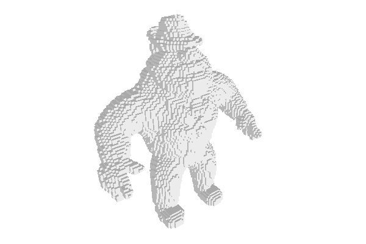
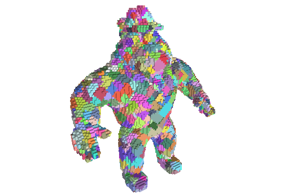
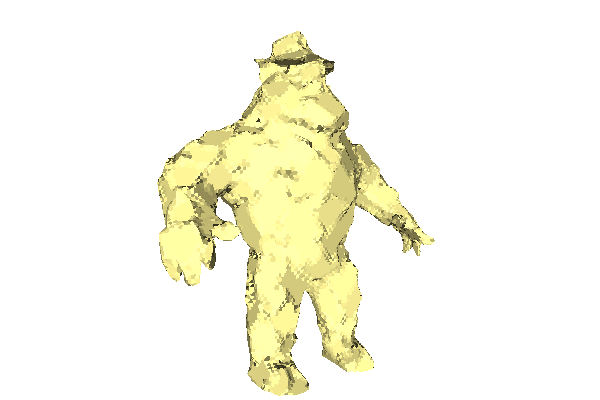
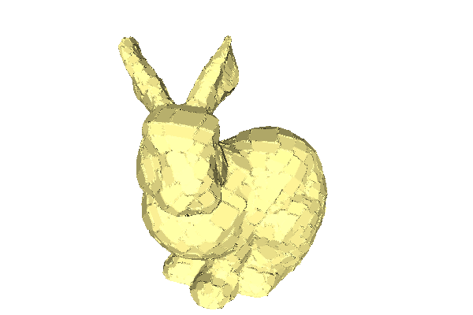
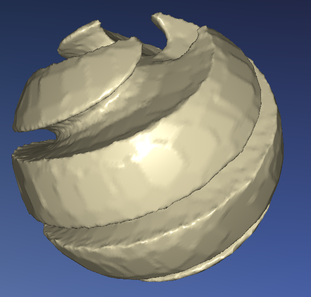

- Author(s) of this documentation:
- Jacques-Olivier Lachaud
This tutorial shows you how to construct a polyhedron (polyhedral surface) from a digital object. It uses several ingredients of DGtal:
- readers: to read an ".obj" file into memory (class VolReader)
- images: to store the ".obj" file into memory (class ImageContainerBySTLVector)
- predicate: to represent the characteristic function of the digital object (class functors::SimpleThresholdForegroundPredicate)
- cellular space: the cellular digital space in which the boundary of the digital object is well defined (class KhalimskySpaceND)
- digital surface: to connect all boundary elements of the digital object as a graph (class DigitalSurface)
- graph visitor: to define neighborhoods on the digital object boundary (class BreadthFirstVisitor)
- digital plane computer: to recognize points of the boundary that belongs to the same plane (class ChordGenericNaivePlaneComputer)
- umbrellas: to decompose the digital surface into cells
- viewers: to see intermediate and final results of our algorithm (class Viewer3D)
Set up your project
We will write a new C++ source file (say makePolyhedron.cpp) that uses the DGtal library. You can follow for instance How to use DGtal in my own project ?. Then you can already start with the following skeleton that includes the main required headers (Qt will be used for displaying results).
#include <iostream>
#include <vector>
#include <set>
#include <map>
#include <queue>
#include <QtGui/qapplication.h>
#include "DGtal/base/Common.h"
#include "DGtal/helpers/StdDefs.h"
We will also play with some .vol file. There are a few in the directory DGtal/examples/samples. We pick below the Al Capone volume file. The program will also be parameterized by the threshold value on the volume file and the integers wp and wq, such that wp/wq is the tolerance used for decomposing the volume boundary into planes.
using namespace std;
using namespace Z3i;
int main(
int argc,
char** argv )
{
QApplication application(argc,argv);
string inputFilename = argc > 1 ? argv[ 1 ] : "DGtal/examples/samples/Al.100.vol";
int threshold = argc > 2 ? atoi( argv[ 2 ] ) : 0;
int wp = argc > 3 ? atoi( argv[ 3 ] ) : 1;
int wq = argc > 4 ? atoi( argv[ 4 ] ) : 1;
...
return 0;
}
DGtal is the top-level namespace which contains all DGtal functions and types.
int main(int argc, char **argv)
Reading the volume file and making the digital object
We store our volume as an image, i.e. a raster of value. We therefore use the class ImageContainerBySTLVector, parameterized by the usual Domain of Z3 (defined in namespace Z3i) and int.
typedef ImageContainerBySTLVector< Domain, int>
Image;
static ImageContainer importVol(const std::string &filename, const Functor &aFunctor=Functor())
ImageContainerBySTLVector< Domain, Value > Image
However an image is not a digital object. We define a digital object implicitly as a Predicate : Point -> bool. Hence, we define the digital object as a threshold of the image with class functors::SimpleThresholdForegroundPredicate.
typedef functors::SimpleThresholdForegroundPredicate<Image> DigitalObject;
DigitalObject digitalObject( image, threshold );
Of course, class functors::SimpleThresholdForegroundPredicate is a wrapper around the image and only references the image.
Wrapping a surface around the boundary of the digital object
Up to now, the digital object is just a characteristic function, without any structure nor boundary. Digital surfaces are defined as inter voxel elemnts between face adjacent voxels, such that one is inside and the other is outside the digital object. It is thus natural to enrich the usual digital space \( \mathbb{Z}^d \) with lower dimensional cells. That is exactly the purpose of class KhalimskySpaceND. That kind of space allows to represent cells of arbitary dimension (see moduleCellularTopology). By convention, voxels are cells of maximal dimension d, surfels are d-1 dimensional cells, etc. Note also that surfels are oriented. It is because a surfel indicates not only a boundary element, but also in which direction is the inside.
ks.init( image.domain().lowerBound(), image.domain().upperBound(), true );
There are several kinds of digital surfaces (see also Digital surfaces). To address this diversity, the class DigitalSurface is templated by a model of CDigitalSurfaceContainer. Here we wish to define a digital surface as the boundary of a characteristic function (a model of concepts::CPointPredicate). We choose in our case the container ImplicitDigitalSurface, which does exactly this but around one boundary component only. You must provide one starting surfel for the implicitly defined surface, which indicates the component of the boundary that it is representing. Use Surfaces::findABel to get a first surfel element. Part of the code is given below
typedef ImplicitDigitalSurface< KSpace, DigitalObject > MyContainer;
MyContainer container( ks, digitalObject, surfAdj, start_surfel );
trace.
info() <<
"Digital surface has " << digSurf.size() <<
" surfels."
<< std::endl;
DigitalSurface< MyDigitalSurfaceContainer > MyDigitalSurface
If everything is fine, you should have a non-null digital surface !

The original Al Capone digital object.
Visualising the surface
Just to check that everything is fine, we can visualize the surface with class Viewer3D, which is based on libQGLViewer (which in turn uses Qt and OpenGL). The principle is to instantiate the viewer and then to use output streams to feed the viewer with cells, colors, etc. The following piece of code displays the first surfel of your surface.
typedef Viewer3D<Space,KSpace> MyViewer3D;
MyViewer3D viewer( ks );
viewer.show();
viewer << *( digSurf.begin() );
viewer << MyViewer3D::updateDisplay;
application.exec();
Update this code to display the whole surface, just by iterating on the range provided by the digital surface. To speed up a little bit the display, you may add the following line (after show() ), which forces a simplified display for surfels.
viewer << SetMode3D( start_surfel.className(), "Basic" );
Recognizing planar zones on the object
We need two different elements to decompose the boundary of our object into planar zones.
- The first one is a way to determine if a set of points is planar. We will use the class ChordGenericNaivePlaneComputer to carry out this task, but you may also have a look at page Plane recognition and plane width computation to have a broader view on this topic. Such an object recognizes arbitrary pieces of planes with a given axis width. Hence it recognizes naive planes when the axis width is 1.
- The second element is a way to visit the points onto the object boundary in a reasonnable way, so that planar pieces are not too elongated. We adopt a simple approach to produce as "round" as possible planar pieces. The digital surface is a model of graph (concept CUndirectedSimpleGraph) and we may perform several breadth-first traversal onto it with the class BreadthFirstVisitor. Again, page Basic graph definitions and concepts gives a more complete overview.
typedef BreadthFirstVisitor<MyDigitalSurface>
Visitor;
COBANaivePlaneComputer< Z3, InternalInteger > NaivePlaneComputer
BreadthFirstVisitor< MyDigitalSurface > Visitor
A breadth first visitor, given a starting vertex on a graph, visits in sequence vertices at increasing (topological) distance. The current Visitor::Node holds a pair <Vertex,Size> which represents the current vertex in the traversal and its distance to the starting vertex. You may choose at each step whether you can continue normally to the next vertex (BreadthFirstVisitor::expand) or if you continue to the next vertex but you block the expansion of the visitor through the current vertex (BreadthFirstVisitor::ignore). We use the visitor layer by layer (i.e. vertices with same distance). Here is a skeleton code for extracting a "round" and planar neighborhood aroud surfel start_surfel. We call this plane the round plane around start_surfel.
std::vector<Point> layer;
planeComputer.init( wp, wq );
Visitor visitor( digSurf, start_surfel );
layer.clear();
while ( ! visitor.finished() )
{
Visitor::Node node = visitor.current();
int axis = ks.sOrthDir( v );
Point p = ks.sCoords( ks.sDirectIncident( v, axis ) );
if ( node.second != currentSize )
{
bool isExtended = planeComputer.extend( layer.begin(), layer.end() );
if ( isExtended )
{
...
layer.clear();
currentSize = node.second;
}
else
break;
}
layer.push_back( p );
visitor.expand();
}
trace.
info() <<
"Vertex " << start_surfel <<
" has plane " << planeComputer.primitive() << std::endl;
HalfEdgeDataStructure::Size Size
- Note
- A surfel has not really integer coordinates that may be used readily for a digital plane recognition algorithm. Our choice here is to see the surfel as if it had the coordinates of its interior voxel. You could use other embeddings: (1) use the four pointels of each surfel, (2) use the doubled half-integer centroid coordinates of the surfel.
Finding the best decomposition into planes
Ok, this is not an easy task, the smallest decomposition is even NP-hard in the general case. We use the following heuristic, which is reasonnably costly. First, we associate an integer to each surfel, and we initialize it to zero.
std::map<Surfel,unsigned int> v2size;
for (
ConstIterator it = digSurf.begin(), itE= digSurf.end(); it != itE; ++it )
v2size[ *it ] = 0;
MyDigitalSurface::ConstIterator ConstIterator
Secondly, for each surfel, we compute its round plane. Then we increment the counter of each surfel that belongs to this round plane. You must reuse the code computing the round plane (Recognizing planar zones on the object), but you must not only store the points of the layer bu also the surfels of the layer. This gives something like that.
int j = 0;
int nb = digSurf.size();
std::vector<Point> layer;
std::vector<Surfel> layer_surfel;
for (
ConstIterator it = digSurf.begin(), itE= digSurf.end(); it != itE; ++it )
{
layer.clear();
layer_surfel.clear();
...
}
void progressBar(const double currentValue, const double maximalValue)
Note that the execution of this part may take some time for big objects. Once this is done, the surfels that belongs to a lot of planes have a high value in v2size. And generally, surfels at the center of big planar regions have a high value. We will thus put the surfels in a priority queue, such that the first surfels to pop out are the one with high value in v2size: they are indeed excellent candidates for finding a good decomposition. To do this, you can use the following generic class for storing pairs and ordering them according to the second member.
template <typename T1, typename T2>
struct PairSorted2nd
{
typedef PairSorted2nd<T1,T2> Self;
PairSorted2nd( const T1& t1, const T2& t2 ) : first( t1 ), second( t2 ) {}
bool operator<(
const Self& other )
const {
return second < other.second; }
T1 first;
T2 second;
};
bool operator<(PointVector< ptDim, LeftEuclideanRing, LeftContainer > const &lhs, PointVector< ptDim, RightEuclideanRing, RightContainer > const &rhs)
Comparison operator on Points/Vectors (LesserThan).
Then we put all the surfels into the priority queue Q.
typedef PairSorted2nd<Surfel,int> WeightedSurfel;
std::priority_queue<WeightedSurfel> Q;
for (
ConstIterator it = digSurf.begin(), itE= digSurf.end(); it != itE; ++it )
Q.push( WeightedSurfel( *it, v2size[ *it ] ) );
The best candidates for planar decomposition are now waiting in order in the queue.
Decomposing the object boundary into planes
The idea is to pop the surfels out of the queue in order. If the popped surfel has not been marked before, then we build its round plane. All the unmarked surfels in the round plane are associated to this round plane, and are in turn marked. We process until the queue is empty.
In order to store the round planes (and other information like its color for display), you shoud define a structure like
template <typename T1, typename T2, typename T3>
struct Triple
{
T1 first;
T2 second;
T3 third;
Triple( T1 t1 = T1(), T2 t2 = T2(), T3 t3 = T3() )
: first( t1 ), second( t2 ), third( t3 )
{}
};
typedef Triple< NaivePlaneComputer, Color, std::pair<RealVector,double> > RoundPlane;
Since a round plane will be shared by many surfels, it is more convenient to allocate them dynamically. A CountedPtr could also be used, but this is enough for a tutorial.
std::set<Surfel> markedSurfels;
std::vector<RoundPlane*> roundPlanes;
std::map<Surfel,RoundPlane*> v2plane;
j = 0;
while ( ! Q.empty() )
{
Q.pop();
if ( markedSurfels.find( v ) != markedSurfels.end() )
continue;
RoundPlane* ptrRoundPlane = new RoundPlane;
roundPlanes.push_back( ptrRoundPlane );
v2plane[ v ] = ptrRoundPlane;
ptrRoundPlane->init( wp, wq );
ptrRoundPlane->second = Color( rand() % 192 + 64, rand() % 192 + 64, rand() % 192 + 64, 255 );
}
At the end of your program, you should of course call delete on each allocated round plane. Since each round plane has a (random) color, we may update our visualisation to display for each surfel the color of its round plane.
MyViewer3D viewer( ks );
viewer.show();
viewer << SetMode3D( start_surfel.className(), "Basic" );
for ( std::map<Surfel,RoundPlane*>::const_iterator
it = v2plane.begin(), itE = v2plane.end();
it != itE; ++it )
{
RoundPlane* rplane = it->second;
viewer << CustomColors3D( rplane->second, rplane->second );
viewer << v;
}
viewer << MyViewer3D::updateDisplay;
application.exec();
This is the kind of result you should obtain.

The round planes of Al Capone digital object, for width=3/2.
Making a polyhedral surface
Now that meaningul planes have been extracted, there are many ways to build a polyhedral surface. We adopt a simple approach, which gives correct results. First of all, we must associate a real plane to each (digital) round plane. The method ChordGenericNaivePlaneComputer::primitive returns the parallel strip that encloses the digital points. We could for instance take the middle plane of the strip as real plane. Another way is to fit by least-square a plane to the points of the round plane. For our purpose, it gives nicer results. That's what we do here. The function below realizes the least-square fit of a plane N.X=mu to an arbitrary range of points [itB,itE).
{
typedef typename RealVector::Component Component;
typedef SimpleMatrix<Component,3,3> Matrix;
Matrix A; A.clear();
unsigned int nb = 0;
RealVector G = RealVector::zero;
{
G +=
RealVector( (*it)[ 0 ], (*it)[ 1 ], (*it)[ 2 ] );
++nb;
}
G /= nb;
{
RealVector p( (*it)[ 0 ], (*it)[ 1 ], (*it)[ 2 ] );
p -= G;
A.setComponent( i, j, A( i, j ) + p[ i ] * p[ j ] );
}
Matrix V;
RealVector values;
N = V.column( 0 );
double mu = 0.0;
mu += N.dot( *it );
return mu/(double)nb;
}
static void getEigenDecomposition(const Matrix &matrix, Matrix &eigenVectors, Vector &eigenValues)
Compute both eigen vectors and eigen values from an input matrix.
DGtal::uint32_t Dimension
double LSF(RealVector &N, ConstIterator itB, ConstIterator itE)
Z3i::RealVector RealVector
You must now compute the LSF plane for each round plane. This is easily done by iterating over the vector roundPlanes. We store the normal vector N and the offset mu into the RoundPlane.
for ( std::vector<RoundPlane*>::iterator
it = roundPlanes.begin(), itE = roundPlanes.end();
it != itE; ++it )
{
RealVector normal;
double mu =
LSF( normal, computer.begin(), computer.end() );
(*it)->third = make_pair( normal, mu );
}
Then each surfel is first projected onto the real plane associated to its round plane. In a second sequence, we average the coordinates of the surfels with the coordinates of their neighbors. The effect is that surfels inside a round plane are still projected onto their plane while surfels just on the rim of a round plane are averaged with the neighboring plane.
std::map<Surfel, RealPoint> coordinates;
for ( std::map<Surfel,RoundPlane*>::const_iterator
it = v2plane.begin(), itE = v2plane.end();
it != itE; ++it )
{
RoundPlane* rplane = it->second;
Point p = ks.sKCoords( v );
RealPoint rp( (
double)p[ 0 ]/2.0, (
double)p[ 1 ]/2.0, (
double)p[ 2 ]/2.0 );
double mu = rplane->third.second;
RealVector normal = rplane->third.first;
double lambda = mu - rp.dot( normal );
coordinates[ v ] = rp + lambda*normal;
}
typedef std::vector<Surfel> SurfelRange;
std::map<Surfel, RealPoint> new_coordinates;
for (
ConstIterator it = digSurf.begin(), itE= digSurf.end(); it != itE; ++it )
{
SurfelRange neighbors;
std::back_insert_iterator<SurfelRange> writeIt = std::back_inserter( neighbors );
digSurf.writeNeighbors( writeIt, *it );
for ( SurfelRange::const_iterator its = neighbors.begin(), itsE = neighbors.end();
its != itsE; ++its )
x += coordinates[ *its ];
new_coordinates[ s ] = x / neighbors.size();
}
It remains to build the polyhedral surface approximating the digital boundary. We use the class Mesh (from package shapes), which let us construct a polyhedral surface by simply adding vertices and then adding faces as vectors of vertex indices. Class Mesh is devoted to i/o. You can output it on a viewer to display it or use the stream operator to export it as some OBJ or OFF file.
typedef unsigned int Number;
typedef Mesh<RealPoint> MyMesh;
typedef MyMesh::MeshFace MeshFace;
typedef MyDigitalSurface::FaceSet FaceSet;
std::map<Surfel, Number>
index;
Number nbv = 0;
MyMesh polyhedron( true );
for (
ConstIterator it = digSurf.begin(), itE= digSurf.end(); it != itE; ++it )
{
polyhedron.addVertex( new_coordinates[ *it ] );
index[ *it ] = nbv++;
}
unsigned int index(DGtal::uint32_t n, unsigned int b)
TriMesh::VertexRange VertexRange
Since surfels are mapped as vertices into the mesh, we need to build faces on the mesh such that their vertices are surfels. It is in fact a kind of dual surface to the digitized boundary. The class DigitalSurface is also able to list the polygonal faces that joins surfels, through method DigitalSurface::allClosedFaces. These faces form umbrellas of surfels around some pointel (see the works of Françon).
FaceSet faces = digSurf.allClosedFaces();
It remains just to iterate over all the faces, and for each face, to use method Mesh::addFace to add a Mesh::MeshFace with the correct vertex indices. Have a look at method DigitalSurface::verticesAroundFace in order to get the surfels around a given face.
Once the polyhedron is build, you may view it and export it as follows:
viewer.clear();
viewer.show();
viewer << polyhedron;
viewer << MyViewer3D::updateDisplay;
application.exec();
bool isOK = polyhedron >> "test.off";
bool isOK2 = polyhedron >> "test.obj";
This gives the following results for different digital objects and plane width.

The polyhedral surface approaching Al Capone digital object, for width=3/1.

The polyhedral surface approaching bunny-256 dataset, for width=2/1.

A nicer viewer for the polyhedral surface approaching sharp-sphere-129, for width=2/1.
Going further
It is clear that a better polyhedralizer would not keep vertices inside a planar zone. It is not too difficult (although not straightforward) to go further along this path. It remains to identify vertices as surfels touching several round planes, and then to build the faces manually. Have fun...